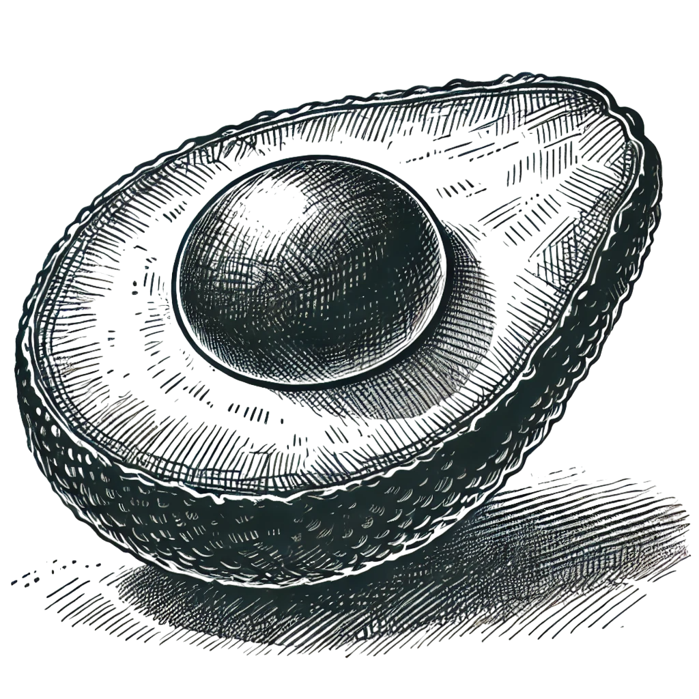
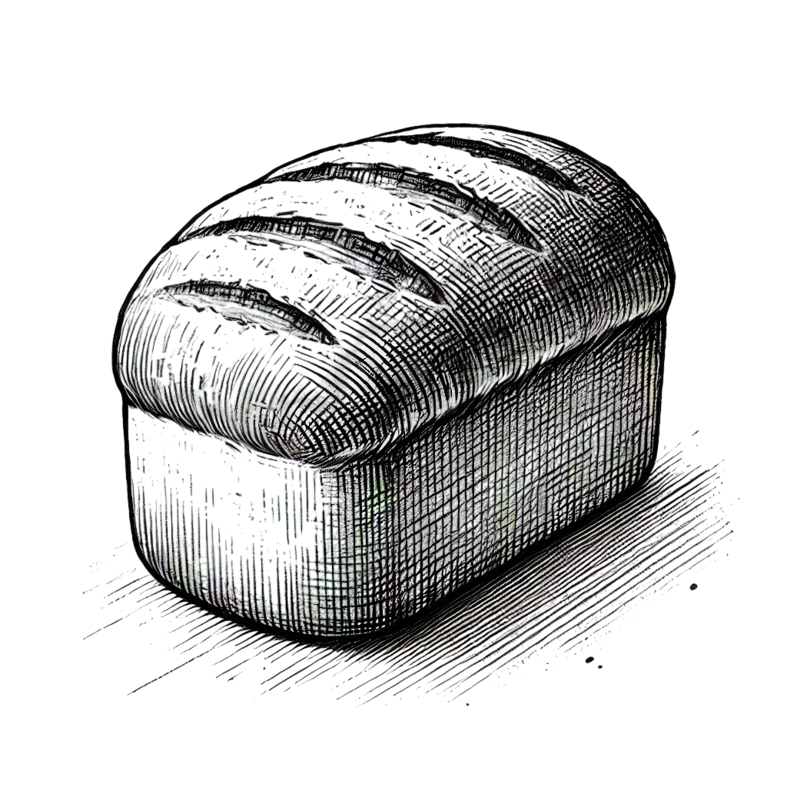

- ヘルシーフードの種類
- 野菜や果物はビタミン、ミネラル、食物繊維が豊富で、抗酸化作用があり免疫力向上に役立ちます。全粒穀物は白米よりも玄米や全粒小麦の方が栄養価が高く、血糖値の上昇を抑え、腹持ちが良いとされています。良質なたんぱく質としては、魚、鶏肉、大豆製品などがあり、筋肉の維持や新陳代謝の向上に寄与します。健康的な脂質はナッツ類、アボカド、オリーブオイルなどに含まれ、悪玉コレステロールを減らし心臓病のリスクを下げる効果があります。
- ヘルシーフードを取り入れるポイント
- 加工食品を減らし、添加物や過剰な塩分・糖分を避けることが大切です。バランスの良い食事を心がけ、偏りのない食生活を意識しましょう。また、調理法も重要で、揚げ物よりも蒸し料理や焼き料理を取り入れるとより健康的です。水分補給も忘れず、水やハーブティーを積極的に飲むことで体の調子を整えることができます。
- ヘルシーフードを日常的に取り入れることで、健康的な体を維持し、生活の質を向上させることができます。無理なく続けられる方法を見つけ、自分に合った健康的な食生活を送りましょう。
What's "Healthy Food"?
 ヘルシーフードとはHealthy Food
ヘルシーフードとは、健康に良いとされる食品や食事のことを指します。栄養バランスが取れており、体に必要なビタミンやミネラルを含んでいることが特徴です。近年では、健康意識の高まりにより、多くの人々がヘルシーフードを意識した食生活を送るようになっています。